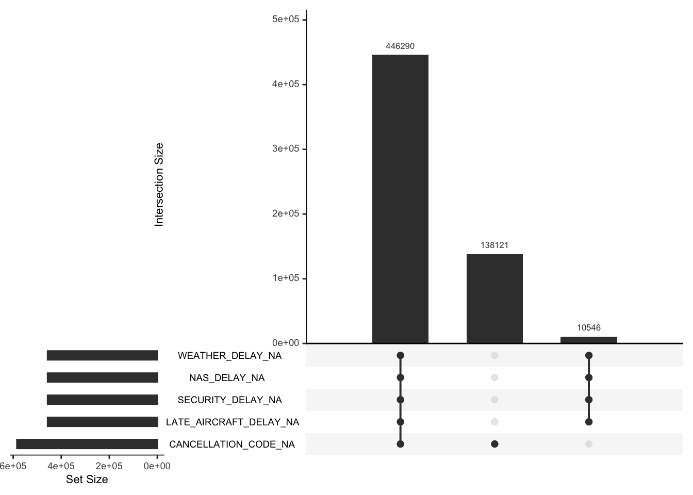

Chapter 3 Data
3.1 Sources
There are two main data sources used in this project. The first part of the data is retrieved from Bureau of Transportation, and divided into two separate csv files. The U.S. Bureau of Transportation Statistics (BTS) is one division of the U.S. Department of Transportation (DOT) that provides credible data and analysis to help regulators and executives better understanding current performance of transportation system. The data reflecting on-time performance of domestic flights by 17 major flight carriers is collected since 1987.
Though the latest update is in December 2022 for flight status in July 2022, we still apply data for July in this study. Since July is among the peak flying season, the result will be more representative and significant when transportation system running at its full capacity. We could detect the delay as well as cancel pattern easily to draw conclusions. Data was generated on October.26 2022 before project proposal, and variable selection was based on research hypothesis. The second part of the data is major airports in United States with longitude and latitude we need for later geovisualization provided by Plotly published on GitHub.
- “T_ONTIME_REPORTING.csv”: there are 30 columns (variables) and 594,957 rows (observations), recording all the flights in July 2022. Downloaded from link: https://www.transtats.bts.gov/DL_SelectFields.aspx?gnoyr_VQ=FGJ&QO_fu146_anzr=b0-gvzr
- “flights.csv”: specify original airport and destination airport for each flight (594,957 rows and 6 columns). Downloaded also from the link above
- “main_airport.csv”: the information of 221 airports in the US and their information (221 rows and 8 columns) downloaded from link: https://raw.githubusercontent.com/plotly/datasets/master/2011_february_us_airport_traffic.csv“.
3.2 Missing value analysis
The missing values (NA) appear in columns “CARRIER_DELAY”, “WEATHER_DELAY”, “NAS_DELAY”, “SECURITY_DELAY”, “LATE_AIRCRAFT_DELAY” and “CANCELLATION_CODE”. These missing values is not useless since they reflect the status of the flights. Therefore, we create a new column “status” to indicate the status of each flight based on assignments in column “DEP_DEL15” and column “CANCELLED”. Also, we notice there are some missing value in column “AIR_TIME” since some canceled flights does not have flying duration recorded in minutes; thus, we use column “DISTANCE” instead since there is no missing value in this column no matter the status of the flight.
From the missing value and the pattern of missing value visualized below using UpSetR package, we observe that:
- There are 446290 rows do not have delay reasons or cancellation codes, which means that these flights are on-time
- There are 138121 rows have missing cancellation code but with non-empty delay reasons, which means that these flights are delayed, and all four variables for delay will not be missing once a flight is delayed.
- There are 10546 rows have all four variables for delay missed but cancellation code is not empty, which means that these flights are cancelled. Notice that the four variables for delay will either appear at the same time or will be missing at the same time.
Figure. 1 The Missing Pattern 
3.3 Cleaning / transformation
To deal with missing values due to different embedded flight status, we create new column “status” to indicate “on-time”, “delayed” and “cancelled” as mentioned above, which becomes the new outcome variable for the cleaned dataset. Also, BTS defines flight delay if flight delay recorded in minutes exceeds 15, which has already stored in column “DEP_DEL15” so there is no necessary transformation. Then, we assign full airline name to column “OP_UNIQUE_CARRIER” as new column named “airline” in order to translate abbreviation to general audience.
Also, to avoid confusions on integer type representing categorical type in actually (such as quarter, day of the month, and day of the week), we set those as factors in R. After data cleaning and transformation, three datasets arrive in an analytical format of data which are displayed below. Finally, the cleaned datasets are written into csv files for results section.
| YEAR | QUARTER | MONTH | DAY_OF_MONTH | DAY_OF_WEEK | FL_DATE | OP_UNIQUE_CARRIER | OP_CARRIER | OP_CARRIER_FL_NUM | ORIGIN_AIRPORT_ID | ORIGIN_AIRPORT_SEQ_ID | ORIGIN_CITY_MARKET_ID | ORIGIN_CITY_NAME | ORIGIN_STATE_ABR | DEST_AIRPORT_ID | DEST_AIRPORT_SEQ_ID | DEST_CITY_MARKET_ID | DEP_DELAY | DEP_DEL15 | DEP_DELAY_GROUP | CANCELLED | CANCELLATION_CODE | DIVERTED | AIR_TIME | DISTANCE | CARRIER_DELAY | WEATHER_DELAY | NAS_DELAY | SECURITY_DELAY | LATE_AIRCRAFT_DELAY | status | airline |
|---|---|---|---|---|---|---|---|---|---|---|---|---|---|---|---|---|---|---|---|---|---|---|---|---|---|---|---|---|---|---|---|
| 2022 | 3 | 7 | 13 | Wednesday | 7/13/2022 12:00:00 AM | WN | WN | 3115 | 11697 | 1169706 | 32467 | Fort Lauderdale, FL | FL | 10821 | 1082106 | 30852 | 45 | 1 | 3 | 0 | NA | 0 | 121 | 925 | 0 | 0 | 0 | 0 | 36 | delayed | Southwest Airlines (WN) |
| 2022 | 3 | 7 | 13 | Wednesday | 7/13/2022 12:00:00 AM | WN | WN | 2764 | 11697 | 1169706 | 32467 | Fort Lauderdale, FL | FL | 11066 | 1106606 | 31066 | 1 | 0 | 0 | 0 | NA | 0 | 123 | 973 | NA | NA | NA | NA | NA | on-time | Southwest Airlines (WN) |
| 2022 | 3 | 7 | 13 | Wednesday | 7/13/2022 12:00:00 AM | WN | WN | 221 | 11697 | 1169706 | 32467 | Fort Lauderdale, FL | FL | 11259 | 1125904 | 30194 | 13 | 0 | 0 | 0 | NA | 0 | 145 | 1108 | NA | NA | NA | NA | NA | on-time | Southwest Airlines (WN) |
| 2022 | 3 | 7 | 13 | Wednesday | 7/13/2022 12:00:00 AM | WN | WN | 1125 | 11697 | 1169706 | 32467 | Fort Lauderdale, FL | FL | 11259 | 1125904 | 30194 | -4 | 0 | -1 | 0 | NA | 0 | 139 | 1108 | NA | NA | NA | NA | NA | on-time | Southwest Airlines (WN) |
| 2022 | 3 | 7 | 13 | Wednesday | 7/13/2022 12:00:00 AM | WN | WN | 512 | 11697 | 1169706 | 32467 | Fort Lauderdale, FL | FL | 11278 | 1127805 | 30852 | 12 | 0 | 0 | 0 | NA | 0 | 118 | 899 | NA | NA | NA | NA | NA | on-time | Southwest Airlines (WN) |
| iata | airport | city | state | country | lat | long | cnt |
|---|---|---|---|---|---|---|---|
| ORD | Chicago O’Hare International | Chicago | IL | USA | 41.97960 | -87.90446 | 25129 |
| ATL | William B Hartsfield-Atlanta Intl | Atlanta | GA | USA | 33.64044 | -84.42694 | 21925 |
| DFW | Dallas-Fort Worth International | Dallas-Fort Worth | TX | USA | 32.89595 | -97.03720 | 20662 |
| PHX | Phoenix Sky Harbor International | Phoenix | AZ | USA | 33.43417 | -112.00806 | 17290 |
| DEN | Denver Intl | Denver | CO | USA | 39.85841 | -104.66700 | 13781 |
| OP_UNIQUE_CARRIER | OP_CARRIER_FL_NUM | ORIGIN | DEST | DEP_DEL15 | CANCELLED |
|---|---|---|---|---|---|
| 9E | 5170 | CMH | DTW | 0 | 0 |
| 9E | 5170 | CMH | DTW | 0 | 0 |
| 9E | 5170 | CMH | DTW | 0 | 0 |
| 9E | 5170 | CMH | DTW | 0 | 0 |
| 9E | 5170 | CMH | DTW | 0 | 0 |